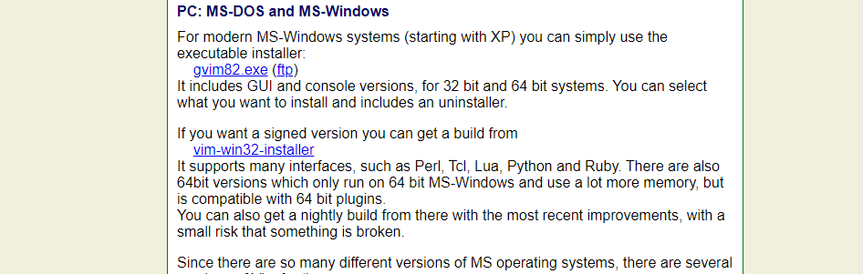
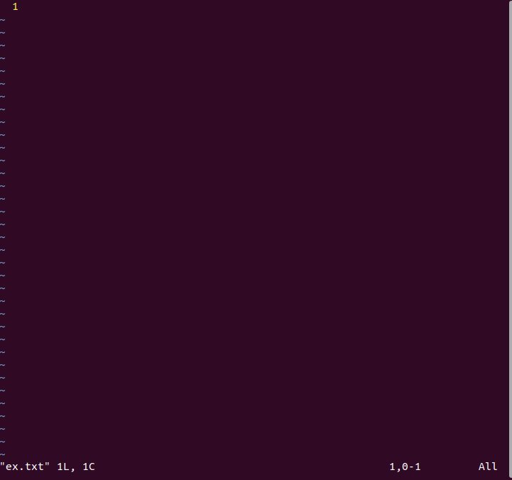
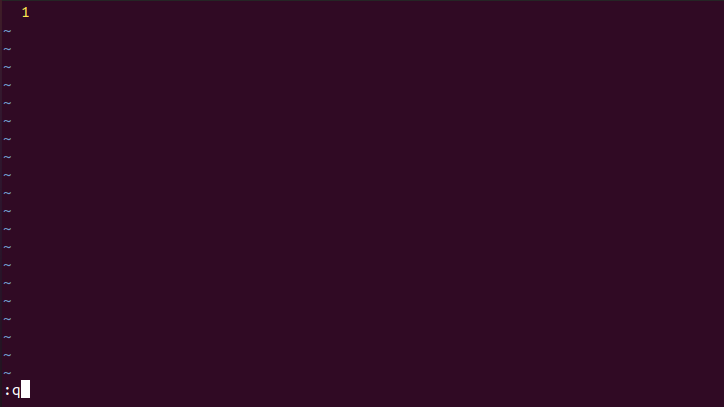

unibook에 오신 여러분을 환영합니다.
안녕하세요. unibook에 오신 것을 환영합니다. 이 장에서는 unibook의 목표, 대상, 설명할 내용, 활용법 대해 얘기해 볼 것입니다.
본격적인 내용에 들어가기에 앞서 unibook은 학교에서 학습하는 것을 도와주는 보조교재라는 것을 먼저 강조드리고 싶습니다. 즉, for문이나 if문과 같은 C++의 문법에 대해 자세히 알려주지는 않습니다._
여러분들은 앞으로 다양한 프로그래밍 언어를 공부하게 될 것입니다. 그리고 그런 프로그래밍 언어에 대해 알려주는 페이지가 매우 많습니다. 하지만 여러분들이 프로그래머로서 성장하기 위해 알아야하는 것은 언어 외에도 중요하게 많은 것들이 있습니다.
- 그냥 수업에서 사용하는 프로그램,
- 왜 배우는 지 모르겠는 터미널과 언어,
- Mac과 Window 그리고 Linux,
- github와 협업에 대한 설명들.
학교 수업 중 당장에 프로그래밍을 하는 데에 지장이 없어서 두루뭉실 넘어가는 개념들은 사실 시간이 흐를수록 꼭 짚고 넘어가야하는 개념들이 됩니다.
그런 개념들을 이해하기 쉽게 설명하여 어떤 프로그램을 사용하면 좋을지, 어떤 방식으로 코딩을하면 좋을지, 어떤 분야가 적성에 맞을지, 어떻게 협업을 해야하는지, 개인적으로 어떻게 공부하면 좋을지 등 여러분들만의 방향을 잡는 데에 도움을 주는 것이 unibook의 목표입니다.
들어가기에 앞서
여러분들이 unibook을 사용하기에 앞서 필요한 준비물이 있습니다. 지금부터
Visual Studio Code(VScode)
bash
gcc
macOS/Window/Linux
GitHub
StackOverflow
에 대한 간단한 설명이나 실행/사용법을 순서대로 알려드리겠습니다.
Visual Studio Code(VScode)
: 마이크로소프트에서 개발한 문서 편집기로, txt, C, C++등 다양한 확장자의 문서를 편집할 수 있습니다. macOS, Window, Linux의 모든 운영체제 지원합니다.
설치(macOS, Window, Linux)
1 macOS
준비중
2 Windows
VScode는 컴파일러를 따로 포함하고 있지 않기 때문에 컴파일러(gcc)를 설치해주어야합니다. 컴파일러에 대한 설명은 뒤에 gcc부분에서 더 자세하게 설명해드리겠습니다.
VScode를 설치하기에 앞서 컴파일러부터 설치해보겠습니다.
1 Windows에서 gcc를 사용할 수 있게 해주는 MinGW 를 설치합니다. 아래 사이트로 들어가 SourceForge를 눌러서 다운받습니다. http://mingw-w64.org/doku.php/download/mingw-builds
Setting은 본인 컴퓨터 사양에 맞게 해줍니다.

설치가 끝난 후 Window+R로 실행창을 켜 sysdm.cpl을 입력합니다.

시스템 속성 창에서 고급 -> 환경변수창을 연 뒤, 사용자 변수에서 Path를 선택한 후, '편집'을 선택합니다.
새로만들기를 선택하여 아래의 경로를 입력해줍니다.
C:\Program Files\mingw-w64\x86_64-8.1.0-posix-seh-rt_v6-rev0\mingw64\bin
마지막으로 cmd창에서 gcc --version 명령어를 입력하여 gcc가 정상적으로 설치되었는지 확인합니다.
vscodeDownload_window_6
{kind=link}
이제 VScode를 설치해보겠습니다.
https://code.visualstudio.com/ 로 이동하여 vscode를 다운받습니다.

다운 완료 후 첫 실행화면입니다.

다음의 아이콘을 선택하면 필요한 extension(확장프로그램)을 설치할 수 있습니다.(Ctrl+Shift+x)

다음으로 Terminal -> Configure Default Build Task... -> Create tasks.json file from template -> MSBuild
순으로 선택하여 tasks.json 파일을 아래와 같이 수정합니다.
```{
"version": "2.0.0",
"runner": "terminal",
"type": "shell",
"echoCommand": true,
"presentation" : { "reveal": "always" },
"tasks": [
//C++ 컴파일
{
"label": "save and compile for C++",
"command": "g++",
"args": [
"${file}",
"-o",
"${fileDirname}/${fileBasenameNoExtension}"
],
"group": "build",
//컴파일시 에러를 편집기에 반영
//참고: https://code.visualstudio.com/docs/editor/tasks#_defining-a-problem-matcher
"problemMatcher": {
"fileLocation": [
"relative",
"${workspaceRoot}"
],
"pattern": {
// The regular expression.
//Example to match: helloWorld.c:5:3: warning: implicit declaration of function 'prinft'
"regexp": "^(.*):(\\d+):(\\d+):\\s+(warning error):\\s+(.*)$",
"file": 1,
"line": 2,
"column": 3,
"severity": 4,
"message": 5
}
}
},
//C 컴파일
{
"label": "save and compile for C",
"command": "gcc",
"args": [
"${file}",
"-o",
"${fileDirname}/${fileBasenameNoExtension}"
],
"group": "build",
//컴파일시 에러를 편집기에 반영
//참고: https://code.visualstudio.com/docs/editor/tasks#_defining-a-problem-matcher
"problemMatcher": {
"fileLocation": [
"relative",
"${workspaceRoot}"
],
"pattern": {
// The regular expression.
//Example to match: helloWorld.c:5:3: warning: implicit declaration of function 'prinft'
"regexp": "^(.*):(\\d+):(\\d+):\\s+(warning error):\\s+(.*)$",
"file": 1,
"line": 2,
"column": 3,
"severity": 4,
"message": 5
}
}
},
// // 바이너리 실행(Windows)
{
"label": "execute",
"command": "cmd",
"group": "test",
"args": [
"/C", "${fileDirname}\\${fileBasenameNoExtension}"
]
}
]
}
```
이제 마지막입니다. File -> Preference -> Keyboard Shortcuts(Ctrl+K Ctrl + S)
로 이동하여 keybindings.json 파일을 아래와 같이 수정합니다.
// Place your key bindings in this file to override the defaults [ { "key": "ctrl+alt+c", "command":"workbench.action.tasks.test"} ]
3 Linux
Linux에서는 macOS나 Windows와 다르게 터미널 창에서 VScode를 설치할 수 있습니다.(터미널은 Ctrl+Alt+T 단축키로 열 수 있습니다.)
명령어 입력으로 우선 컴파일러부터 설치해줍니다.
sudo apt-get install build-essential
설치가 완료되면 아래의 명령어를 입력하여 정상설치 되었는지 확인합니다.
gcc --help
이어서 VScode를 설치해보겠습니다.
1 MS의 GPG를 다운받기 위한 curl 패키지를 설치합니다.
sudo apt-get install curl
2 GPG를 다운받아서 /etc/apt/trusted.gpg.d/ 경로에 복사합니다.
sudo sh -c ' curl https://packages.microsoft.com/keys/microsoft.asc | gpg --dearmor > /etc/apt/trusted.gpg.d/microsoft.gpg '
3 VScode를 다운받기 위한 저장소를 /etc/apt/sources.list.d/ 경로에 추가해주겠습니다.
sudo sh -c ' echo " deb [arch=amd64] https://packages.microsoft.com/repos/vscode stable main " > /etc/apt/sources.list.d/vscode.list '
4 패키지를 다운받았으므로 업데이트를 해줍니다.
sudo apt-get update
5 VScode를 설치합니다.
sudo apt-get install code
6 3에서 추가했던 저장소를 삭제합니다.
sudo rm /etc/apt/sources.list.d/vscode.list
VScode의 설치가 완료된 후, 터미널 창에 code라고 입력하여 VScode를 실행시킬 수 있습니다.

VScode를 실행시킨 후, Extentions(Ctrl+Shift+X)창을 열어서 원하는 확장 프로그램을 설치해줍니다.
우선 C/C++을 설치해보겠습니다.
Open Folder(Ctrl+Shift+E)에서 작업할 폴더를 선택할 수 있습니다.
다음으로 Terminal -> Configure Default Build Task... -> Create tasks.json file from template -> MSBuild
순으로 선택하여 tasks.json 파일을 아래와 같이 수정합니다.
{
"version": "2.0.0",
"runner": "terminal",
"type": "shell",
"echoCommand": true,
"presentation": {"reveal": "always"},
"tasks": [
//C++
{
"label":"save and compile C++",
"command":"g++",
"args":[
"-g3"
"${file}",
"-o",
"${fileDirname}/${fileBasenameNoExtension}"
],
"group": "build",
"problemMatcher":{
"fileLocation":[
"relative",
"${workspaceRoot"
],
"pattern": {
"regexp":"^(.*):(\\d+):(\\d+):\\s+(warning error):\\s+(.*)$",
"file":1,
"line":2,
"column": 3,
"severity": 4,
"message": 5
}
}
},
//C
{
"label":"save and compile C",
"command":"gcc",
"args":[
"-g3"
"${file}",
"-o",
"${fileDirname}/${fileBasenameNoExtension}"
],
"group": "build",
"problemMatcher":{
"fileLocation":[
"relative",
"${workspaceRoot"
],
"pattern": {
"regexp":"^(.*):(\\d+):(\\d+):\\s+(warning error):\\s+(.*)$",
"file":1,
"line":2,
"column": 3,
"severity": 4,
"message": 5
}
}
},
{
"label": "execute",
"command":"cd ${fileDirname} && ./${fileBasenameNoExtension}",
"group": "test"
}
]
}
이제 마지막입니다. File -> Preference -> Keyboard Shortcuts(Ctrl+K Ctrl + S)
로 이동하여 keybindings.json 파일을 아래와 같이 수정합니다.(컴파일/실행 단축키를 설정하는 것입니다.)
// Place your key bindings in this file to override the defaults
[
//compile
{ "key": "ctrl+shift+1", "command":"workbench.action.tasks.build"},
//execution
{ "key": "ctrl+shift+2", "command":"workbench.action.tasks.test"}
]
bash
bash는 (셸)Shell 의 한 종류 입니다. (셸은 bash말고도 zbash, ksh, csh 등 여러 종류가 있습니다.)
셸은 '명령어 처리기'로, 사람이 컴퓨터에게 일을 시킬 때 쓰는 프로그램이라고 할 수 있습니다.
우리가 명령어를 입력하면 셸이 받아들이고 명령어를 해석하여 커널을 사용하여 하드웨어를 조작합니다.
gcc
gcc는 GNU Compiler Collection 의 약자로, 언어 컴파일러입니다.
여기서 컴파일러란, C와 같은 고급언어를 binary code(이진코드)와 같은 저급언어로 변환해주는 프로그램입니다.
사람이 이해할 수 있는 C언어를 컴퓨터가 이해할 수 있는 binary code로 변환해주는 것이죠.
위에서 언급했듯이 Visual Studio Code는 컴파일러가 포함되어있지 않기 때문에 따로 설치를 해주었습니다.
macOS/Window/Linux
흔히 컴퓨터는 0과 1밖에 모른다고 합니다. 사실 엄밀히 말하면 0과 1도 모르죠. 사용자가 어떤 행동을 해서 전기신호를 주면, '전압이 충분하지 않다' 와 '전압이 충분하다' 그 정도를 구분할 수 있습니다.
하지만 사용자가 컴퓨터를 사용하기 위해 일일히 전기신호를 입력해줄 수는 없는 노릇입니다.
여기서 사용자가 컴퓨터를 쉽게 다룰 수 있게 해주는 인터페이스를 운영체제(=Operating System = OS)라고 합니다. 하드웨어와 소프트웨어를 관리하는 소프트웨어라고 할 수 있죠.
macOS, Window, Linux는 주로 널리 사용되는 운영체제입니다.
Gihub
Github는 버전 관리 시스템 입니다.
우리가 프로젝트를 진행할 때 완전히 혼자 하는 경우는 드물며, 대부분 다른 사람들과 함께 진행하게 됩니다. 이 때 프로젝트를 더 간편하게 관리하기 위해서 사용하는 것이 Github입니다. Github에 대한 자세한 설명은 VCS, 그리고 오픈소스에서 다루기로 하고 여기서는 Github 계정만 만들어보겠습니다.
우선 Github 사이트에 들어갑니다. https://github.com/
Sign up으로 회원가입을 진행합니다.
이메일 인증까지 모든 과정을 완료하면 아래와 같이 가입이 완료됩니다.
프로젝트를 위해서 repository를 생성하거나, team프로젝트를 위해 organization을 만들거나, Github 이용법에 대해서 볼 수 있는 선택지가 보입니다.
일단은 Skip this for now로 넘어가 줍시다.
이렇게 github 가입을 간단하게 완료했습니다.
StackOverflow
StackOverflow는 질문/답변 사이트입니다.
https://stackoverflow.com/
Sign up으로 회원가입을 해봅니다.


회원가입을 완료한 후, 로그인을 하면 Search 로 검색하거나 Ask Question 으로 질문을 올릴 수 있습니다.
unibook
level 1
- 프로그래밍의 기초
- 텍스트 에디터(Text Editor), 그리고 IDE
- 터미널
- 디렉토리와 파일
- 다시 한 번 Hello, World!
- VCS
- 오픈소스
- OS, 그리고 Linux
- 프로그래밍 언어
- 에러와 디버깅
level 2
추가하면 좋을 것 같은 주제:
애자일, 테스트, TDD
note
함수형 프로그래밍은 level 1에 넣기에는 좀 무리인듯...?
Chapter 2
텍스트 에디터(Text Editor), 그리고 IDE
Chapter 2에서는 텍스트 에디터와 IDE에 대해서 알아보겠습니다.
텍스트 에디터 는 텍스트 파일을 편집할 수 있는 프로그램입니다. 우리가 많이 사용하는 메모장 도 텍스트 에디터입니다.
IDE (Integrated Development Environment)는 통합개발환경으로, 텍스트 에디터 기능을 포함하여 코딩, 디버그, 컴파일, 배포 등 프로그램을 개발할 때 사용되는 도구들의 집합체 소프트웨어입니다.
이어서 텍스트에디터와 IDE에 대해서 더 자세하게 알아보겠습니다.
Chapter 2.1
텍스트 에디터
앞선 페이지에서는 메모장을 텍스트 에디터로 예시를 들었지만 우리가 프로그래밍을 하며 사용하는 텍스트 에디터는 메모장보다 더 다양한 기능을 제공하는 것들을 주로 사용합니다.
텍스트 에디터는 간단한 기능들만 제공하면 되기 때문에 그 종류는 매우 다양하게 있습니다.
1. Atom
Github에서 개발한 텍스트 에디터입니다. (https://atom.io/)
초심자들이 사용하기에 좋고, 적용할 수 있는 테마가 다양하며 거대한 사용자 커뮤니티가 있습니다.
단점으로는 프로그램이 굉장히 무겁다는 점이 있습니다.
 사이트에 들어가면 귀여운 고양이쭈꾸미가 반겨주네요
사이트에 들어가면 귀여운 고양이쭈꾸미가 반겨주네요
2. Visual Studio Code
우리가 설치했던 편집기죠. 마이크로소프트사에서 개발한 텍스트 에디터입니다.
atom보다 속도가 훨씬 빠르고 가볍습니다. 그리고 atom보다 설정할 수 있는 것들이 많다는 장점이 있습니다.
Chapter 2.2
IDE
IDE가 프로그램을 개발할 때 사용되는 도구들의 집합체 소프트웨어라고 할 수 있다고 했었습니다. 여기서 집합된 '도구'들은 IDE마다 다르지만 보통은
편집기
언어팩
git 연동
터미널
여러가지 테마
기타 플러글인
등 많은 것들이 포함됩니다.
IDE 역시 종류가 굉장히 다양합니다.
1. Visual Studio
Visual Studio는 마이크로소프트사에서 만든 IDE로, 특히 C계열의 언어를 개발할 때 많이 이용합니다.

2. Xcode
IOS 네이티브 앱 개발에 필수인 맥에서 사용되는 IDE입니다.
이미지 준비중
3. Eclipse
Oracle에서 개발한 IDE로, 주로 Java 개발에 많이 이욛됩니다.
2.3
Visual Studio Code
앞서 텍스트 에디터와 IDE에 대해서 알아보았습니다.
여러분들이 학교에서는 아마 Visual Studio 나 Eclipse 로 수업을 진행할 것입니다. 그런데 왜 여기서는 Visual Studio Code 를 처음에 설치하고 시작한 걸까요?
Visual Studio 나 Eclipse 는 IDE 입니다. 프로그램을 개발할 때 사용되는 도구들의 집합체인만큼 다양한 기능을 추가적인 설정이나 조작 없이도 빠르게 사용할 수 있도록 준비되어 있지만 그만큼 무겁다는 단점이 있죠.
반면 Visual Studio Code 는 텍스트 에디터이기 때문에 아주 가볍게 프로그램을 돌릴 수 있다는 장점이 있습니다. 물론 필요에 따라서 추가적인 설정 (ex-tasks.json) 을 해야한다는 번거로움이 있긴 하지만 몇 번의 설정을 해주고 프로그래밍을 하는 내내 가볍게 돌릴 수 있다는 것은 큰 장점이 되죠.
이 페이지에서는 Visual Studio Code 를 가볍게 둘러보는 시간을 가져보겠습니다.
-
Visual Studio Code 첫 화면
 vscode를 실행시켰을 때의 첫 화면입니다. Welcome이라며 환영해주는군유.
vscode를 실행시켰을 때의 첫 화면입니다. Welcome이라며 환영해주는군유.
원한다면 한글팩을 다운받아서 한글버전으로도 사용할 수 있지만 우리는 앞으로 영어 사용에 익숙해지는 것이 좋기 때문에 이대로 진행해보겠습니다. -
Explorer(탐색기) - Ctrl+Shift+E

Welcome창을 닫아봤습니다. 창이 없어진 자리에 Open File(Ctrl+O) 와 Open Folder(Ctrl+K Ctrl+O) 가 눈에 띕니다.
Open File을 하면 원하는 파일을 하나 열어서 창으로 띄워 편집할 수 있습니다.
닫을 때는 Ctrl+K Ctrl+O 나 해당 탭의 x표시 클릭으로 닫을 수 있습니다.
Open Folder로는 작업할 폴더를 열어서 폴더 안의 파일들을 작업할 수 있습니다.
닫을 때는 Ctrl+K F 를 통해서 닫을 수 있습니다.
-
Search(검색) - Ctrl+Shift+F

전체 검색 기능입니다. 현재 열려있는 폴더 내의 모든 파일명, 파일 내의 내용까지 검색되는 것을 확인할 수 있습니다. -
Source Control(소스코드관리) - Ctrl+Shift+G
 작성한 소스코드를 관리할 수 있습니다. 위의 사진을 보면 왼쪽 창은 비어있고, 오른쪽 창은 배경색이 초록색인 문장으로 가득한 것을 확인할 수 있는데요, 제가 비어있던 파일에 초록색만큼의 내용을 추가했다는 의미입니다. 소스코드관리는 Git으로 하는 습관을 가지는 것이 훨씬 좋기 때문에 사용법은 넘어가겠습니다.
작성한 소스코드를 관리할 수 있습니다. 위의 사진을 보면 왼쪽 창은 비어있고, 오른쪽 창은 배경색이 초록색인 문장으로 가득한 것을 확인할 수 있는데요, 제가 비어있던 파일에 초록색만큼의 내용을 추가했다는 의미입니다. 소스코드관리는 Git으로 하는 습관을 가지는 것이 훨씬 좋기 때문에 사용법은 넘어가겠습니다. -
Run(실행) - Ctrl+Shift+D 준비중
-
Extensions(확장관리) - Ctrl+Shift+X

확장 프로그램을 검색하여 설치할 수 있는 탭입니다. 원하는 extension(C, Java, Python 등)을 검색하고 필요한 것을 다운받아서 사용할 수 있습니다. -
Test 준비중
VScode를 간단하게 둘러보았습니다. 이걸로 VScode를 충분히 사용할 수 있는데요, 흔히들 많이 해보는 hello world를 한 번 출력해보겠습니다.
 BDY 폴더를 열고 빨간색 동그라미로 표시한 부분을 눌러서 hello.cpp 파일을 생성하고 작성했습니다.
BDY 폴더를 열고 빨간색 동그라미로 표시한 부분을 눌러서 hello.cpp 파일을 생성하고 작성했습니다.
위 코드를 Ctrl+S Ctrl+Shift+C 를 순서대로 눌러서 저장하고 실행하면 터미널에 hello world가 출력되는 것을 확인할 수 있습니다.
2.4
90년대의 보물, Vim
Vim 역시 텍스트에디터 중 하나입니다.
2.5
Vim 튜토리얼
그럼 Vim을 간단하게 한 번 사용해보겠습니다.
우선 vim을 설치하는 것부터 해보겠습니다.
Windows
다음 사이트로 들어가서 PC: MS-DOS and MS-Windows로 들어갑니다.
https://www.vim.org/download.php

다음으로 gvim82.exe 를 찾아 다운받습니다.(gvim 옆의 숫자는 바뀔 수도 있습니다.)

윈도우에 gVim을 입력하여 Vim을 실행시킨 화면입니다.

Linux
이어서 리눅스에서 Vim을 설치해보겠습니다.
우선 터미널창을 열어준 뒤 명령어를 차례로 입력합니다.
sudo apt-get upadate
sudo apt-get install vim
위의 명령어 두 줄을 입력하면 vim 설치는 끝납니다. 간단하죠?
이 밑에서 하는 것들은 추가 기능을 위한 것입니다.
아래 명령어는 vi 편집기로 홈 디렉토리(~)에 .vimrc 파일을 생성한다는 명령어입니다.
vi ~/.vimrc

위 화면에서 i를 입력하면 쓰기 모드가 됩니다. 아래 설정들을 입력합시다.
set number " line 표시
set ai " auto indent
set si " smart indent
set cindent " c style indent
set shiftwidth=4 " 자동 공백 채움 시 4칸
set tabstop=4 " tab을 4칸 공백으로
set ignorecase " 검색 시 대소문자 무시
set hlsearch " 검색 시 하이라이트
set nocompatible " 방향키로 이동 가능
set fileencodings=utf-8,euc-kr " 파일 저장 인코딩 : utf-8, euc-kr
set fencs=ucs-bom,utf-8,euc-kr " 한글 파일은 euc-kr, 유니코드는 유니코드
set bs=indent,eol,start " backspace 사용가능
set ruler " 상태 표시줄에 커서 위치 표시
set title " 제목 표시
set showmatch " 다른 코딩 프로그램처럼 매칭되는 괄호 보여줌
set wmnu " tab 을 눌렀을 때 자동완성 가능한 목록
syntax on " 문법 하이라이트 on
filetype indent on " 파일 종류에 따른 구문 강조
set mouse=a " 커서 이동을 마우스로 가능하도록
위의 내용을 작성한 후, Esc를 누르면 명령어 모드로 바뀝니다. :를 입력한 후 명령어로 wq를 입력하면 저장및 종료됩니다. 앞으로 vim 파일명을 입력하면 vim을 사용하여 문서 편집을 할 수 있습니다.
Vim 사용해보기
Vim 설치를 완료했으니 Vim을 간단하게 사용해보겠습니다.
Vim을 처음 사용해볼 땐 진입장벽이 있습니다. Ctrl+C, Ctrl+V 등이 먹히지 않는 등 기존 우리가 사용하던 편집기들과는 사용법이 많이 다르기 때문 입니다. 하지만 익숙해지면 굉장히 편한 것이 또 Vim이기 때문에 틈틈히 익혀두면 좋을 것입니다.
명령어 입력하기
Vim에 명령어를 입력할 때는 콜론(:)을 먼저 입력한 후에 입력해야합니다. 예를 들어볼까요?
ex.txt라는 이름으로 파일을 만들어보겠습니다.

이런 창이 뜹니다.

이 상태에서 뭔가를 입력하려고 하면 입력이 되지 않습니다. 여기서 :q를 입력하면 창을 나갈 수 있습니다.

q가 vim을 종료하는 명령어이기 때문입니다.
명령어를 정리해보면,
:q 종료
:w 저장
:w file.txt 파일명으로 저장
:w >> file.txt 파일에 덧붙여서 저장
:q! 강제종료
:wq 저장 후 종료
:wq! 강제 저장후 종료
입력을 하기 위해서는 입력모드로 전환해야합니다. 입력모드는 :를 입력할 필요가 없습니다.
i 커서의 위치에 입력
I 커서 행의 맨 앞부터 입력
a 커서 위치 다음 칸부터 입력
A 커서 행의 맨 마지막부터 입력
o 커서의 다음 행에 입력
O 커서의 이전 행에 입력
s 커서 위치의 한 글자를 지우고 입력
cc 커서위치의 한 행을 지우고 입력
입력모드에서 다시 명령어 모드로 돌아갈 때는 Esc 키를 누르면 돌아갈 수 있습니다.
이 외에도 정말 다양한 기능들이 있지만, 너무 많기 때문에 이 페이지에서는 파일의 생성, 작성, 저장, 종료 정도의 기능만 설명했습니다.
순서대로 해보면 vim 파일명 -> i -> 내용작성 -> Esc -> :wq 정도로 요약할 수 있겠군요.
실행화면을 올리는 것보단 짧고 간단하게 사용법을 작성해봤습니다. vim은 익숙하지 않은 방식의 편집기이기 때문에 직접 해보면서 찾아보는 것만큼 익히는 데에 좋은 방법이 없다고 생각하기 때문입니다.
분명 처음 배울 떄는 이걸 왜 사용하나 싶을 수 있지만, 꾸준히 사용하다보면 여러분도 vim말고는 사용하지 못하는 사람들 중 한 명이 될 수 있을지도 모르겠습니다.
2.5
Vim을 사용하는 이유
지금까지의 설명을 보면 익숙하고 보기도 편한 다른 편집기들을 두고 왜 Vim을 사용하는가에 대해 의문을 가질 수도 있습니다.
Vim은 열악하던 터미널 환경에서 최소한의 시간 을 들여서 작업을 하기 위해 각종 명령어 조합들이 준비되어 있습니다. 이러한 명령어의 조합들은 vim의 진입장벽을 높였습니다.
하지만 Ctrl+C 대신 dd, Ctrl+V 대신 yy 와 같이 간단한 명령어 조합이 많고, 명령어를 사용함에 따라 마우스를 사용할 필요없이 작업이 가능합니다. 이외에도 명령어와 시스템에 의한 장점이 많기에 그에 익숙해졌을 때 vim을 정말로 편하게 사용할 수 있게 되는 것이죠.
터미널 소개
터미널 은 텍스트 기반 명령을 입력하고 실행할 수 있는 인터페이스입니다. 그래픽 응용 프로그램 및 메뉴보다 터미널을 사용하여 일부 작업을 완료하는 것이 훨씬 빠르고 더 많은 명령과 스크립트에 액세스 할 수 있습니다.
왜 bash를 사용하는지 알아봅시다
우선 bash 란 무엇인가에 대해서 알아봅시다. bash는 Borune-again shell이 전체 이름입니다. 유닉스에서 사용하는 커멘드 셀의 일종으로 GNU프로젝트를 위해 만들어졌습니다. 초기의 유닉스 셸인 본 셸*Bourne shell)과 새로 태어났다는 뜻의 영어인 "born again" 이 두개가 합쳐진 이름입니다.
Bash는 1987년 브라리언 포스 가 만들었는데요. 1990년 이후에는 첫 레이미가 주로 관리하고 있습니다. Bash 명령어의 문법은 거의 대부분 sh와 호환되어 쓸 수 있는데요. 또한 ksh, csh에서 많은 단어 아이디어를 받아서 명령 히스토리, 디렉토리 스택, $RANDOM POSIX 형식 명령어 치환 등을 지원합니다. 또한 입력 중에 명령어나 파일 이름을 자동으로 완성해주는 기능도 지원합니다. Bash는 다양한 리눅스 시스템, 맥 오에스 텐의 기본 셸이며, 수많은 유닉스 계열 운영체제에서 동작합니다. 마이크로소프트윈도에서도 시그윈 프로젝트 등에 의해 이식되어 있습니다.
Bash는 GNUGPL로 배포되고 있으며, GNU 프로젝트 FTP 사이트를 비롯하여 수많은 인터넷 사이트에서 내려받을 수 있습니다.
Bash를 사용하는 이유는 간단하다는 장점이 가장 큽니다. 일반적으로 사용자가 원하는 모든 작업을 수행할 수 있죠. 쉽게 전환도 가능합니다.
VIM이 왜 필요한지 알아봅시다
vim을 주로 리눅스 공부할 때 접해 보시겠지만 GUI(Graphic User Interface)환경에 익숙한 현대 컴퓨터 사용자들은 vim을 접하고 어려움과 당황스러움을 겪게 됩니다. 일단 방향키부터 h,j,k,l을 사용해야하고 글을 쓰거나 명령(단축키)를 하기 위한 Mode들로 전환하여야 하는 인터페이스를 가지고 있습니다. 이러한 입력모드, 명령모드, 비주얼모드는 우리에게 익숙하지 않은 전혀 다른 단축키를 사용하기에 우리가 흔히 접할 수 있는 방식으로 사용이 불가능하기 때문에 반드시 공부를 하여야 사용할 수 있어 비교적 진입 장벽이 높습니다.
이렇게 보면 사용하기도 불편한 vim을 왜 사용한는 것인가 생각을 할 수 있는데 이에 대한 이유 를 알아보겠습니다.
1. 오른손의 이동을 최소화합니다
vim 에 대해 이해하기 위해 vi의 탄생에 대해서 알아야합니다. vi는 GUI환경이 우리에게 익숙하게 다가오기 훨씬 전인 1976년 최초로 세상에 발표되었습니다. 당시 한 줄씩 편집하는 방식이 아닌 전체 화면에서 편집하였기에 Visual Editor라는 뜻으로 vi가 되었습니다. 이 당시 마우스는 당연히 사용되지 않았으며 현재 사용되는 키 배치와 다른 키보드를 사용했었습니다. 이 때문에 커서를 이동하는 방향키도 지정되어 있어야하고 명령 단축키들도 현재의 키보드와 다른 배치를 가지게 되었습니다. 참고로 이러한 불편한 점 때문에 vim을 주력으로 사용하는 사용자들은 해피해킹이라는 UNIX계열 환경에 최적화 된 고가 키보드를 사용하여 작업 효율을 향상시키기도 합니다. 해피해킹 키보드는 vim뿐 아니라 라이벌 관계인 Emacs 에디터와 BSD UNIX계열의 운영체제인 애플의 매킨토시(MAX OS X)와도 궁합이 잘맞습니다. 이러한 특징을 보았을 때 현재의 직관적인 방향키와 마우스 등에 의해 편하고 익숙한 방식에 뒤떨어진다고 말할 수도 있습니다. 그렇지만 vim은 오른손의 이동을 최소한으로 감소시켜 준다는 것이 장점입니다.
하지만 이러한 특징은 현재의 직관적인 방향키와 마우스 등에 의해 편하고 익숙한 방식에 뒤떨어진다고 말할 수도 있습니다. 그렇지만 vim은 오른손의 이동을 최소한으로 감소시켜 준다 는 것이 장점입니다. 즉 굳이 방향키까지 오른손을 이동하지 않아도 쓸 수 있다 는 장점입니다.
2. 문서편집에 효율이 향상됩니다.
vim 은 키 조합을 이용한 명령이 적습니다. 바로 입력과 명령이 가능한 다른 에디터들과 달리 vim은 입력모드로 전환하여야 글자가 입력되고 일반모드로 전환하여 복사, 붙여넣기, 줄 삭제 등의 명령이 가능합니다. 각 Mode로 전환하는 것이 꽤나 번거롭겠지만 명령을 조합이 아닌 키 하나로 작업 할 수 있기 때문에 익숙해지고 나면 Ctrl이나 Alt등을 조합할 일이 줄어들고 한 손으로도 문서 편집이 가능해지져서 효율성이 올라갈 수도 있습니다.
3. 어디서든 사용 가능합니다.
vim 은 UNIX 계열 대부분 기본적으로 제공하고 있기에 따로 설치할 필요가 없다는 것이 장점입니다. 예를 들어 서버 기술자가 자신의 관할이 아닌 서버를 다루어야 할 상황 이 발생하였을 경우 남의 서버에 자신이 사용하는 에디터가 없어서 작업에 난감한 상황이 생길 수 있습니다. vim은 대부분의 UNIX계열에 기본적으로 설치되어 있기에 이런 난감한 상황이 생기지 않을 수있습니다. 이 뿐만 아니라 교육을 받으러 갔을 때도 교육 대부분은 VM(Virtual Machine)안에서 이루어지지만 네트워크가 연결되지 않아 주력 에디터를 설치하지 못할 수도 있고 혹여 주변 시선을 신경쓰는 분들은 혼자 vim을 다루지 못한다는 것에 민망함 을 가질 수 있습니다.
터미널로 어떤 것들을 할 수 있는지 알아봅시다
터미널은 원래 유닉스 기반의 대형 컴퓨터에서 사용자들이 컴퓨터에 접속하기 위해 사용했던 단말기를 의미 합니다. 즉 하나의 컴퓨터를 케이블로 연결해 여러명이 접속해 사용하는 방식이었습니다. 각각의 터미널은 대부부은 특별한 기능은 없고 모니터와 키보드를 가지고 있었으며 나중에는 확장되어 프린터나 마우스등이 연결되는 형태로 까지 발전 했습니다.
지금은 개인용 컴퓨터를 사용하기 때문에 더이상 과거와 같은 터미널 을 사용하지는 않습니다. 대신 원격으로 컴퓨터에 접속하거나 혹은 명령어입력을 통해 컴퓨터를 직접 제어 하기 위해 사용하는 소프트웨어를 터미널 혹은 콘솔(Console) 이라고 합니다.
모든 운영체제는 기본적인 터미널 프로그램을 내장하고 있으며 전문적으로 만들어진 별도 프로그램도 많이 개발되어 있습니다.
터미널에서 자주 사용되는 명령어를 알아봅시다
- cd 디렉토리명 - 해당 디렉토리로 이동 (change directory)
- ls - 조회하기(list). 윈도우 command prompt의 dir과 동일함.
- cd .. - 상위 디렉토리로 이동
- cd 또는 cd ~ - 홈디렉토리로 이동
- mkdir 디렉토리명 - 새로운 디렉토리 폴더 생성 (make directory)
- rmdir 디렉토리명 - 폴더 삭제 (remove directory)
- touch 파일명.확장자명 - 파일 생성
- clear 또는 cmd + K - 화면 클리어하기
- cp 대상파일명 변경파일명 타겟경로 - 복사 (copy)
- mv - 이동(move)
- rm - 삭제(remove)
- whoami - 내 정보 조회
- cat - 텍스트 파일 열기
- vim 또는 vi - vim 편집기 실행
- grep - 파일안 내용찾기
- sudo - 관리자 권한으로 실행
위에서 배운 부분들로 터미널과 VIM을 사용해보며 다음 챕터에서 시작할 코딩 준비해봅시다!!
1. 가상머신을 설치한 후 terminal을 실행합니다.
2. terminal에서 자신의 이니셜이 들어간 디렉토리를 생성하고 그 디렉토리로 이동합니다.
3. 그곳에서 명령어를 사용하여 코딩을 할 수 있는 폴더를 vim 명령어를 사용하여 열어봅시다!
( 파일이름은 자유로 지정 )
터미널 소개
터미널 은 텍스트 기반 명령을 입력하고 실행할 수 있는 인터페이스입니다. 그래픽 응용 프로그램 및 메뉴보다 터미널을 사용하여 일부 작업을 완료하는 것이 훨씬 빠르고 더 많은 명령과 스크립트에 액세스 할 수 있습니다.
왜 bash를 사용하는지 알아봅시다
우선 bash 란 무엇인가에 대해서 알아봅시다. bash는 Borune-again shell이 전체 이름입니다. 유닉스에서 사용하는 커멘드 셀의 일종으로 GNU프로젝트를 위해 만들어졌습니다. 초기의 유닉스 셸인 본 셸*Bourne shell)과 새로 태어났다는 뜻의 영어인 "born again" 이 두개가 합쳐진 이름입니다.
Bash는 1987년 브라리언 포스 가 만들었는데요. 1990년 이후에는 첫 레이미가 주로 관리하고 있습니다. Bash 명령어의 문법은 거의 대부분 sh와 호환되어 쓸 수 있는데요. 또한 ksh, csh에서 많은 단어 아이디어를 받아서 명령 히스토리, 디렉토리 스택, $RANDOM POSIX 형식 명령어 치환 등을 지원합니다. 또한 입력 중에 명령어나 파일 이름을 자동으로 완성해주는 기능도 지원합니다. Bash는 다양한 리눅스 시스템, 맥 오에스 텐의 기본 셸이며, 수많은 유닉스 계열 운영체제에서 동작합니다. 마이크로소프트윈도에서도 시그윈 프로젝트 등에 의해 이식되어 있습니다.
Bash는 GNUGPL로 배포되고 있으며, GNU 프로젝트 FTP 사이트를 비롯하여 수많은 인터넷 사이트에서 내려받을 수 있습니다.
Bash를 사용하는 이유는 간단하다는 장점이 가장 큽니다. 일반적으로 사용자가 원하는 모든 작업을 수행할 수 있죠. 쉽게 전환도 가능합니다.
VIM이 왜 필요한지 알아봅시다
vim을 주로 리눅스 공부할 때 접해 보시겠지만 GUI(Graphic User Interface)환경에 익숙한 현대 컴퓨터 사용자들은 vim을 접하고 어려움과 당황스러움을 겪게 됩니다. 일단 방향키부터 h,j,k,l을 사용해야하고 글을 쓰거나 명령(단축키)를 하기 위한 Mode들로 전환하여야 하는 인터페이스를 가지고 있습니다. 이러한 입력모드, 명령모드, 비주얼모드는 우리에게 익숙하지 않은 전혀 다른 단축키를 사용하기에 우리가 흔히 접할 수 있는 방식으로 사용이 불가능하기 때문에 반드시 공부를 하여야 사용할 수 있어 비교적 진입 장벽이 높습니다.
이렇게 보면 사용하기도 불편한 vim을 왜 사용한는 것인가 생각을 할 수 있는데 이에 대한 이유 를 알아보겠습니다.
1. 오른손의 이동을 최소화합니다
vim 에 대해 이해하기 위해 vi의 탄생에 대해서 알아야합니다. vi는 GUI환경이 우리에게 익숙하게 다가오기 훨씬 전인 1976년 최초로 세상에 발표되었습니다. 당시 한 줄씩 편집하는 방식이 아닌 전체 화면에서 편집하였기에 Visual Editor라는 뜻으로 vi가 되었습니다. 이 당시 마우스는 당연히 사용되지 않았으며 현재 사용되는 키 배치와 다른 키보드를 사용했었습니다. 이 때문에 커서를 이동하는 방향키도 지정되어 있어야하고 명령 단축키들도 현재의 키보드와 다른 배치를 가지게 되었습니다. 참고로 이러한 불편한 점 때문에 vim을 주력으로 사용하는 사용자들은 해피해킹이라는 UNIX계열 환경에 최적화 된 고가 키보드를 사용하여 작업 효율을 향상시키기도 합니다. 해피해킹 키보드는 vim뿐 아니라 라이벌 관계인 Emacs 에디터와 BSD UNIX계열의 운영체제인 애플의 매킨토시(MAX OS X)와도 궁합이 잘맞습니다. 이러한 특징을 보았을 때 현재의 직관적인 방향키와 마우스 등에 의해 편하고 익숙한 방식에 뒤떨어진다고 말할 수도 있습니다. 그렇지만 vim은 오른손의 이동을 최소한으로 감소시켜 준다는 것이 장점입니다.
하지만 이러한 특징은 현재의 직관적인 방향키와 마우스 등에 의해 편하고 익숙한 방식에 뒤떨어진다고 말할 수도 있습니다. 그렇지만 vim은 오른손의 이동을 최소한으로 감소시켜 준다 는 것이 장점입니다. 즉 굳이 방향키까지 오른손을 이동하지 않아도 쓸 수 있다 는 장점입니다.
2. 문서편집에 효율이 향상됩니다.
vim 은 키 조합을 이용한 명령이 적습니다. 바로 입력과 명령이 가능한 다른 에디터들과 달리 vim은 입력모드로 전환하여야 글자가 입력되고 일반모드로 전환하여 복사, 붙여넣기, 줄 삭제 등의 명령이 가능합니다. 각 Mode로 전환하는 것이 꽤나 번거롭겠지만 명령을 조합이 아닌 키 하나로 작업 할 수 있기 때문에 익숙해지고 나면 Ctrl이나 Alt등을 조합할 일이 줄어들고 한 손으로도 문서 편집이 가능해지져서 효율성이 올라갈 수도 있습니다.
3. 어디서든 사용 가능합니다.
vim 은 UNIX 계열 대부분 기본적으로 제공하고 있기에 따로 설치할 필요가 없다는 것이 장점입니다. 예를 들어 서버 기술자가 자신의 관할이 아닌 서버를 다루어야 할 상황 이 발생하였을 경우 남의 서버에 자신이 사용하는 에디터가 없어서 작업에 난감한 상황이 생길 수 있습니다. vim은 대부분의 UNIX계열에 기본적으로 설치되어 있기에 이런 난감한 상황이 생기지 않을 수있습니다. 이 뿐만 아니라 교육을 받으러 갔을 때도 교육 대부분은 VM(Virtual Machine)안에서 이루어지지만 네트워크가 연결되지 않아 주력 에디터를 설치하지 못할 수도 있고 혹여 주변 시선을 신경쓰는 분들은 혼자 vim을 다루지 못한다는 것에 민망함 을 가질 수 있습니다.
터미널로 어떤 것들을 할 수 있는지 알아봅시다
터미널은 원래 유닉스 기반의 대형 컴퓨터에서 사용자들이 컴퓨터에 접속하기 위해 사용했던 단말기를 의미 합니다. 즉 하나의 컴퓨터를 케이블로 연결해 여러명이 접속해 사용하는 방식이었습니다. 각각의 터미널은 대부부은 특별한 기능은 없고 모니터와 키보드를 가지고 있었으며 나중에는 확장되어 프린터나 마우스등이 연결되는 형태로 까지 발전 했습니다.
지금은 개인용 컴퓨터를 사용하기 때문에 더이상 과거와 같은 터미널 을 사용하지는 않습니다. 대신 원격으로 컴퓨터에 접속하거나 혹은 명령어입력을 통해 컴퓨터를 직접 제어 하기 위해 사용하는 소프트웨어를 터미널 혹은 콘솔(Console) 이라고 합니다.
터미널에서 자주 사용되는 명령어를 알아봅시다
- cd 디렉토리명 - 해당 디렉토리로 이동 (change directory)
- ls - 조회하기(list). 윈도우 command prompt의 dir과 동일함.
- cd .. - 상위 디렉토리로 이동
- cd 또는 cd ~ - 홈디렉토리로 이동
- mkdir 디렉토리명 - 새로운 디렉토리 폴더 생성 (make directory)
- rmdir 디렉토리명 - 폴더 삭제 (remove directory)
- touch 파일명.확장자명 - 파일 생성
- clear 또는 cmd + K - 화면 클리어하기
- cp 대상파일명 변경파일명 타겟경로 - 복사 (copy)
- mv - 이동(move)
- rm - 삭제(remove)
- whoami - 내 정보 조회
- cat - 텍스트 파일 열기
- vim 또는 vi - vim 편집기 실행
- grep - 파일안 내용찾기
- sudo - 관리자 권한으로 실행
위에서 배운 부분들로 터미널과 VIM을 사용해보며 다음 챕터에서 시작할 코딩 준비해봅시다!!
1. 가상머신을 설치한 후 terminal을 실행합니다.
2. terminal에서 자신의 이니셜이 들어간 디렉토리를 생성하고 그 디렉토리로 이동합니다.
3. 그곳에서 명령어를 사용하여 코딩을 할 수 있는 폴더를 vim 명령어를 사용하여 열어봅시다!
( 파일이름은 자유로 지정 )
C++과 gcc를 이용하여 hello, world 콘솔에 출력보기!!
그전에 gcc에 대해서 알아봅시다.
gcc 기본 커맨드 설명
gcc란! GNU 컴파일러 모음(GNU Compiler Collection, 줄여서 GCC)는 GNU 프로젝트의 일환으로 개발되어 널리 쓰이고 있는 컴파일러입니다. 자유 소프트웨어 중에 가장 잘 알려진 것들 중 하나이죠. 원래 GCC는 C만을 지원했던 컴파일러로 이름도 "GNU C 컴파일러"엿지만, 후에 C++, Java, Fortran, Ada 등 여러 언어를 컴파일할 수 있게 되면서, 현재의 이름으로 바뀌었습니다. GCC는 리처드 스톨만이 1987년 GNU 프로젝트의 컴파일러로 작성했씁니다. GNU 프로젝트에 컴파일러가 없었기 때문에 이 개발은 자유 소프트웨어 재단이 후원하였습니다. 1997년 개발 과정은 공개되었으며, 속도 또한 빨라졌습니다. 199년 첫 번전이 나왔는데 현재 GCC는 전세계적으로 관리되고 있으며, 다양한 중앙 처리 장치를 처리할 수 있게 되었습니다. GNU 시스템의 공식 컴파일러이므로 GCC는 많은 컴파일러와 운영 체제를 만드는데 사용되었습니다. 한편, 시스템 네이티브 컴파일러를 사용했을때 비해서 GCC를 사용하면 같은 파서로 코드를 처리하므로 이식성을 향상시킬 수 있었습니다. GCC는 상용 컴파일러에 비해서 느린 코드를 생성했지만 최근 많이 개선되었습니다.
gcc에 대한 기본 이해
gcc를 소스를 가져다 손수 설치해보신 적은 없을 것입니다. 보통은 바이너리 패키지로 된 것을 가져다 설치를해요! gcc 패키지가 어떤 것으로 구성되어있는지! gcc가 제대로 설치되어 있는지 알보봅시다
/lib/cpp ----> /usr/lib/gcc-lib/i386-linux/2.7.2.1/cpp (링크)
/usr/bin/cc ----> gcc (링크)
/usr/bin/gcc C 컴파일러 'front-end'
/usr/bin/protoize
/usr/bin/unprotoize
/usr/info/cpp.info->.gz GNU info 시스템을 이용하는 파일들
/usr/info/gcc.info->.gz
/usr/lib/gcc-lib
마지막 /usr/lib/gcc-lib 디렉토리에 gcc에 관한 모든 내용이 설치됩니다.
보통은 이러한 형식으로 디렉토리 구조를 가집니다.
/usr/lib/gcc-lib/<플랫폼>/<gcc 버전>
/usr/lib/gcc-lib 밑의 내용을 살펴보겠습니다
/usr/lib/gcc-lib/i386-linux/2.7.2.1/cc1
/usr/lib/gcc-lib/i386-linux/2.7.2.1/cpp
/usr/lib/gcc-lib/i386-linux/2.7.2.1/include/*.h
/usr/lib/gcc-lib/i386-linux/2.7.2.1/libgcc.a
/usr/lib/gcc-lib/i386-linux/2.7.2.1/specs
cc1은 진짜 C 컴파일러 본체입니다. gcc는 단지 적절하게 C인지 c++인지 아니면 오트젝티브 C 인지를 검사하며 컴파일 작업만 아니라 "링크" 라는 작업까지 C 언어로 프로그램 소스를 만든 다음, 프로그램 바이너리가 만들어지기까지의 모든 과정을 관장해주는 "조정자"역할을 해줍니다.
C 컴파일러는 cc1, C++ 컴파일러는 cc1plus, 오브젝티브 C 컴파일러는 cc1obj입니다. 여러분이 C++/오브젝티브 C 컴파일러를 설치하셨다면 cc1plus, cc1obj 라는 실행파일도 찾아볼 수 있습니다. cpp는 "프리프로세서"입니다. #include 등의 본격적인 cc1 컴파일에 들어가기에 앞서 먼저(pre) 처리(process)해주는 녀석입니다.
g++ 즉 C++ 컴파일러에 대한 패키지는 다음과 같습니다.
/usr/bin/c++ ---------------------------------> (링크)
/usr/bin/g++
/usr/bin/gcc-lib/i386-linux/2.7.2.1/cc1plus (진짜 C++ 컴파일러)
오브젝티브 C 컴파일러 패키지는 다음과 같습니다.
/usr/lib/gcc-lib/i386-linux/2.7.2.1/cc1obj
/usr/lib/gcc-lib/i386-linux/2.7.2.1/include/objc/*.h
/usr/lib/gcc-lib/i386-linux/2.7.2.1/libobjc.a
gcc 사용하기
#include <stdio.h>
int main (void) {
printf("Hello World!");
retrun 0;
}
위의 코드로 Hello World!를 출력해봅시다. 컴파일을 하기전에 헤더와 main함수, 입출력에 대해서 알아봅시다
위의 코드에서는 stdio.h라는 헤더 함수를 사용했는데요 아래에서 쓴 printf함수 원래 기본 형은 printf()입니다. 괄호가 붙어있으면 대다수 함수라고 볼 수 있습니다. 여기서 중요한 점은 이는 함수라는 점인데요. 보통 이렇게 생각합니다. "우리는 저 함수를 선언해준 적이 없는데?" 라고 생각 할 수 있는데요. 아니에요! 사실 저희는 함수를 선언했답니다~ 바로 #include <stdio.h> 이 부분에서 사용했어요.
#include<stdio.h>에서 printf를 포함한 여러 함수들을 선언했다는 의미입니다. 다른 헤더 파일도 있는데 이는 각각의'~.h'와 같은 방식으로 여러가지 함수들이 '선언' 되어있습니다! 이를 #include안에 넣으면 됩니다.
또한 여기서 사용된 printf는 출력 함수로 출력 내용을 형식과 같이 나타나게 되면 사용할 수 있게 됩니다. scanf도 있는데 이는 입력 함수이며 printf와 같이 형식과 같이 표현하면 입력을 받을 수 있게됩니다.
이제 헤더와 입출력 함수에 대해 알았으니 main 함수의 원리에 대해 알아보겠습니다
int main() {
내용
return 0;
}
이는 main함수인데요 c언어에서는 main이라는 함수를 쓰면 프로그램이 실행됨을 의미하며, '0의 값이 반환될 경우, 프로그램이 정상적으로 마쳤으니 종료해라' 라는 의미를 갖고 있습니다.
이제 컴파일하고 실행 파일을 만들어 봅시다.
gcc hello.c -o hello.out 이를 통해서 컴파일을 할 수 있습니다.
이를 실행 할때는 ./hello.out 이렇게 치면 나오는데요 유닉스는 기본적으로 PATH라는 환경변수에 있는 디렉토리에서만 실행파일을 찾습니다.
만약 PATH라는 환경변수에 현재디렉토리를 의미하는 도트 문자(.)가 들어있지 않다면 현재 디렉토리의 실행파일은 절대 실행되지 않습니다. 게다가 현재 디렉토리를 PATH 환경 변수에 넣어준다 할지라도 도스처럼 현재 디렉토리를 먼저 찾는 일이 없고 PATH에 지정한 순서대로 수행합니다.
중간에 -o에 대해서 볼 수 있었는데요 이는 출력 파일명을 정하는 옵션입니다. 일반적으로는 파일명 그대로에다가 .out으로 출력 파일이라는 것을 의미하며 이 옵션을 사용하지 않고 gcc hello.c를 입력했을 때는 a.out으로 출력 파일이 생성됩니다.
이외에도 -c, -l, -L 옵션이 존재하는데요. 이는 좀더 심화된 것으로 이번 챕터에서는 다루지 않도록 합니다! 나중에 심화를 하게된다며 배우도록 하겠습니다!!
간단하게 c++로 Hello World 출력하기
#include <iostream>
int main(Void) {
cout << "Hello World!";
return 0;
}
c++에는 stdio.h와 비슷하게 iostream헤더가 입출력 해더와 다른 함수들을 가지고 있습니다. printf와 비슷한 것은 cout이며 이외에는 c에서 배운 것과 같습니다
이를 컴파일 해봅시다
g++ hello.cpp -o hello.out
c++의 확장자는 cpp이므로 이를 사용해주고 c++이므로 g++을 통하여 컴파일을 할 수 있습니다!!
c와 c++ 언어에서의 Hello World를 출력하는 방법에 대해서 알아보았으며 이제 다음챕터로 넘어가봅시다!!
gcc 기본 커맨드 설명
gcc란! GNU 컴파일러 모음(GNU Compiler Collection, 줄여서 GCC)는 GNU 프로젝트의 일환으로 개발되어 널리 쓰이고 있는 컴파일러입니다. 자유 소프트웨어 중에 가장 잘 알려진 것들 중 하나이죠. 원래 GCC는 C만을 지원했던 컴파일러로 이름도 "GNU C 컴파일러"엿지만, 후에 C++, Java, Fortran, Ada 등 여러 언어를 컴파일할 수 있게 되면서, 현재의 이름으로 바뀌었습니다. GCC는 리처드 스톨만이 1987년 GNU 프로젝트의 컴파일러로 작성했씁니다. GNU 프로젝트에 컴파일러가 없었기 때문에 이 개발은 자유 소프트웨어 재단이 후원하였습니다. 1997년 개발 과정은 공개되었으며, 속도 또한 빨라졌습니다. 199년 첫 번전이 나왔는데 현재 GCC는 전세계적으로 관리되고 있으며, 다양한 중앙 처리 장치를 처리할 수 있게 되었습니다. GNU 시스템의 공식 컴파일러이므로 GCC는 많은 컴파일러와 운영 체제를 만드는데 사용되었습니다. 한편, 시스템 네이티브 컴파일러를 사용했을때 비해서 GCC를 사용하면 같은 파서로 코드를 처리하므로 이식성을 향상시킬 수 있었습니다. GCC는 상용 컴파일러에 비해서 느린 코드를 생성했지만 최근 많이 개선되었습니다.
gcc에 대한 기본 이해
gcc를 소스를 가져다 손수 설치해보신 적은 없을 것입니다. 보통은 바이너리 패키지로 된 것을 가져다 설치를해요! gcc 패키지가 어떤 것으로 구성되어있는지! gcc가 제대로 설치되어 있는지 알보봅시다
/lib/cpp ----> /usr/lib/gcc-lib/i386-linux/2.7.2.1/cpp (링크)
/usr/bin/cc ----> gcc (링크)
/usr/bin/gcc C 컴파일러 'front-end'
/usr/bin/protoize
/usr/bin/unprotoize
/usr/info/cpp.info->.gz GNU info 시스템을 이용하는 파일들
/usr/info/gcc.info->.gz
/usr/lib/gcc-lib
마지막 /usr/lib/gcc-lib 디렉토리에 gcc에 관한 모든 내용이 설치됩니다.
보통은 이러한 형식으로 디렉토리 구조를 가집니다.
/usr/lib/gcc-lib/<플랫폼>/<gcc 버전>
/usr/lib/gcc-lib 밑의 내용을 살펴보겠습니다
/usr/lib/gcc-lib/i386-linux/2.7.2.1/cc1
/usr/lib/gcc-lib/i386-linux/2.7.2.1/cpp
/usr/lib/gcc-lib/i386-linux/2.7.2.1/include/*.h
/usr/lib/gcc-lib/i386-linux/2.7.2.1/libgcc.a
/usr/lib/gcc-lib/i386-linux/2.7.2.1/specs
cc1은 진짜 C 컴파일러 본체입니다. gcc는 단지 적절하게 C인지 c++인지 아니면 오트젝티브 C 인지를 검사하며 컴파일 작업만 아니라 "링크" 라는 작업까지 C 언어로 프로그램 소스를 만든 다음, 프로그램 바이너리가 만들어지기까지의 모든 과정을 관장해주는 "조정자"역할을 해줍니다.
C 컴파일러는 cc1, C++ 컴파일러는 cc1plus, 오브젝티브 C 컴파일러는 cc1obj입니다. 여러분이 C++/오브젝티브 C 컴파일러를 설치하셨다면 cc1plus, cc1obj 라는 실행파일도 찾아볼 수 있습니다. cpp는 "프리프로세서"입니다. #include 등의 본격적인 cc1 컴파일에 들어가기에 앞서 먼저(pre) 처리(process)해주는 녀석입니다.
g++ 즉 C++ 컴파일러에 대한 패키지는 다음과 같습니다.
/usr/bin/c++ ---------------------------------> (링크)
/usr/bin/g++
/usr/bin/gcc-lib/i386-linux/2.7.2.1/cc1plus (진짜 C++ 컴파일러)
오브젝티브 C 컴파일러 패키지는 다음과 같습니다.
/usr/lib/gcc-lib/i386-linux/2.7.2.1/cc1obj
/usr/lib/gcc-lib/i386-linux/2.7.2.1/include/objc/*.h
/usr/lib/gcc-lib/i386-linux/2.7.2.1/libobjc.a
gcc 사용하기
#include <stdio.h>
int main (void) {
printf("Hello World!");
retrun 0;
}
위의 코드로 Hello World!를 출력해봅시다. 컴파일을 하기전에 헤더와 main함수, 입출력에 대해서 알아봅시다
위의 코드에서는 stdio.h라는 헤더 함수를 사용했는데요 아래에서 쓴 printf함수 원래 기본 형은 printf()입니다. 괄호가 붙어있으면 대다수 함수라고 볼 수 있습니다. 여기서 중요한 점은 이는 함수라는 점인데요. 보통 이렇게 생각합니다. "우리는 저 함수를 선언해준 적이 없는데?" 라고 생각 할 수 있는데요. 아니에요! 사실 저희는 함수를 선언했답니다~ 바로 #include <stdio.h> 이 부분에서 사용했어요.
#include<stdio.h>에서 printf를 포함한 여러 함수들을 선언했다는 의미입니다. 다른 헤더 파일도 있는데 이는 각각의'~.h'와 같은 방식으로 여러가지 함수들이 '선언' 되어있습니다! 이를 #include안에 넣으면 됩니다.
또한 여기서 사용된 printf는 출력 함수로 출력 내용을 형식과 같이 나타나게 되면 사용할 수 있게 됩니다. scanf도 있는데 이는 입력 함수이며 printf와 같이 형식과 같이 표현하면 입력을 받을 수 있게됩니다.
이제 헤더와 입출력 함수에 대해 알았으니 main 함수의 원리에 대해 알아보겠습니다
int main() {
내용
return 0;
}
이는 main함수인데요 c언어에서는 main이라는 함수를 쓰면 프로그램이 실행됨을 의미하며, '0의 값이 반환될 경우, 프로그램이 정상적으로 마쳤으니 종료해라' 라는 의미를 갖고 있습니다.
이제 컴파일하고 실행 파일을 만들어 봅시다.
gcc hello.c -o hello.out 이를 통해서 컴파일을 할 수 있습니다.
이를 실행 할때는 ./hello.out 이렇게 치면 나오는데요 유닉스는 기본적으로 PATH라는 환경변수에 있는 디렉토리에서만 실행파일을 찾습니다.
만약 PATH라는 환경변수에 현재디렉토리를 의미하는 도트 문자(.)가 들어있지 않다면 현재 디렉토리의 실행파일은 절대 실행되지 않습니다. 게다가 현재 디렉토리를 PATH 환경 변수에 넣어준다 할지라도 도스처럼 현재 디렉토리를 먼저 찾는 일이 없고 PATH에 지정한 순서대로 수행합니다.
중간에 -o에 대해서 볼 수 있었는데요 이는 출력 파일명을 정하는 옵션입니다. 일반적으로는 파일명 그대로에다가 .out으로 출력 파일이라는 것을 의미하며 이 옵션을 사용하지 않고 gcc hello.c를 입력했을 때는 a.out으로 출력 파일이 생성됩니다.
이외에도 -c, -l, -L 옵션이 존재하는데요. 이는 좀더 심화된 것으로 이번 챕터에서는 다루지 않도록 합니다! 나중에 심화를 하게된다며 배우도록 하겠습니다!!
간단하게 c++로 Hello World 출력하기
#include <iostream>
int main(Void) {
cout << "Hello World!";
return 0;
}
c++에는 stdio.h와 비슷하게 iostream헤더가 입출력 해더와 다른 함수들을 가지고 있습니다. printf와 비슷한 것은 cout이며 이외에는 c에서 배운 것과 같습니다
이를 컴파일 해봅시다
g++ hello.cpp -o hello.out
c++의 확장자는 cpp이므로 이를 사용해주고 c++이므로 g++을 통하여 컴파일을 할 수 있습니다!!
c와 c++ 언어에서의 Hello World를 출력하는 방법에 대해서 알아보았으며 이제 다음챕터로 넘어가봅시다!!
VCS and OPENSOURCE
VCS란?
Git 을 소개하기 전에 VCS를 가장 먼저 알아야한다고 생각되어 먼저 소개해드리겠습니다! VCS란 Version Control System의 약자입니다. 우리말로는 버전관리시스템. 우리는 프로그램을 만들때, 프로그램명_V1, V2, V3 등 처럼 뒤에다가 붙여 저장합니다. 우리가 이렇게 하는 것도 버전관리의 일종이라고 볼 수 있습니다. 파일을 수정하고 저장했다가, 나중에 뭐가 잘못된거나 하면 다시 이전버턴으로 돌아갈 수 있도록 하는 것이 바로 버전관리의 정의입니다.
VCS의 종류
VCS의 종류는 세가지입니다.
-
로컬버전관리
컴퓨터에서 디렉토리 만들고 그 안에서 파일명으로 버전별로 관리하는 단순하고 일반적인 형태의 VSC방식입니다. 잘못될 위험이 크고 체계적이지 못하다는 단점이 있습니다. -
중앙집중식 버전관리(CVCS)
서버에다가 관리하는 형태, 프로젝트가 있다면 그 프로젝트 수정한 것을 서버에 올리고 다른 사람도 수정해서 서버로 올리는 형태입니다. 로컬에서는 관리를 안하고 서버에서만 관리하기 때문에 서버가 다운되거나, 정보가 날라가거나, 수정 충돌 문제가 발생할 수 있다. -
분산버전관리시스템
서버에서 관리하고 로컬에서도 관리를 한다. 서버가 날라가도 로컬이 있으며 로컬이 날라가도 서버가 있어서 매우 안적적인 시스템이다. Git이 이 방식을 쓴다.
Git의 역사
리누스 토발즈 가 리눅스를 만든 사람이라는 것은 모두 다 많이 들었을 것입니다. Git도 이분이 만들었다고 합니다. tmi지만 2주밖에 안걸렸다고 하네요. 리눅스는 커널이라고 하는 리눅스 운영체제의 핵심소프트웨어가 있고 오픈소스로 공개해놓았기 때문에 누구나 수정해서 올릴 수 있습니다. 이러한 방식이다보니 처음엔 괜찮았지만 점차 관리가 힘들어졌습니다. 그래서 Bitkeeper라는 버전관리시스템을 가져다 썼는데, 그러다가 유효화가되고 사용제한이 걸려 리누스 토발즈가 Git을 제작했다고 합니다~!
Git과 Github
Git은 버전관리시스템 이고 Github는 Git을 이용하여 웹에다가 호스팅해주는 무료저장소 공간이자 오픈 소스코드가 모여있는 성지입니다 Git과 Github를 연동해서 웹상에다가 올리고 받고를 할 수 있으며 한마디로 Github가 원격저장소 역할 을 해줍니다.
Git의 원리
Git과 다른 VCS는 큰 차이를 가지고 있습니다.
대부분의 버전관리
Git을 제외한 대부분의 버전관리는 파일이 약간만 수정되어도 버전을 바꾸며 바뀐 파일 이외도 같이 저장하게됩니다. 이 방식은 저장공간을 많이 차지하고 중복된 저장으로 인해 비효율적 입니다.
Git의 버전관리
Git의 방식은 파일이 일부 수정되어도 버전이 달라지는 것이 아니고 전과 비슷한데 뭐가 다른거라는 생각을 합니다. 중복된 파일을 저장하는 경우 링크형식으로 해서 저장합니다. 파일을 저장하는게 아닌 링크형식으로 이전 파일을 가리키기 때문에 대부분의 버전관리보다 훨씬 공간도 적게 들고 효율적 입니다. 또한 대부분의 VCS는 명령어가 서버에 있기 때문에 네트워크에 영향을 받습니다. 하지만 Git은 명령어가 로컬영역에 있기 때문에 빠르고 효과적으로 수행가능합니다!
Ubuntu에서 git 설치 및 clone하기
- sudo apt-get install git 명령어를 입력하여 패키지 리스트를 업데이트 합니다.
- sudo apt install git 명령어를 입력하여 깃을 설치합니다.
- git --version이라는 명령어를 입력하면 설치할 git의 버전을 알 수 있습니다.
- 아래 명령어를 입력하여 깃에 push했을 때 올라갈 내 정보를 입력해줍니다.
git config --global user.name [이름]
git config --global user.email [메일 주소]
- git clone [url 주소]를 입력하여 자신이 원하는 프로젝트를 깃으로부터 내려받습니다.
- 홈에 가면 위와같이 내가 내려받았던 깃 프로젝트가 있는 폴더를 확인할 수 있습니다.
Window에서 git 설치 및 clone하기
- https://git-scm.com/downloads 링크되어 있는 페이지에 들어가서 자신의 OS에 맞는 Git 설치버전을 받는다.
- 약관, 설치경로, Component 등을 읽으며 설정을하여 설치를 완료한다.
- 깃을 처음 설치하면 Name과 Email이 Null로 되어있으므로 설치받은 GitBash를 열어서 아래의 명령어를 치고 설정을 해준다.
git config --global user.name [이름]
git config --global user.email [메일 주소]
- 아래의 명령어를 입력하여 잘들어갔는지를 확인한다.
git config --list
- clone할 디렉토리를 생성한 후 오른쪽 버튼을 클릭하여 'Git Bash Here'을 실행합니다.
- git clone [url 주소]를 입력하여 자신이 원하는 프로젝트를 깃으로부터 내려받습니다.
- 디렉토리에 들어가 내려받았던 깃 프로젝트가 있는지를 확인합니다.
Github에 올려보기 ( + fork를 한 경우)
- clone한 디렉토리에서 프로그램 코드나 md파일을 추가 작성합니다.
- git checkout -b [branch 이름]을 사용하여 올릴 브랜치를 생성합니다.
- git add 명령어를 사용하여 작성한 파일들을 추가합니다.
- git commit -m '' ''안에 커밋 메시지를 적어줍니다.
- git push origin [branch 이름]을 사용하여 Github에 올려줍니다!!
- main에 올려주기위해 comapre~써져 있는 부분을 눌르면 오픈소스에 대해서 기여하고 싶을 때 merge요청을 할 수 있습니다!
내가 원하는 오픈소스를 다운받아보자!
위에서 배웠던 방법들을 통하여 오픈소스 파일을 clone해보세요!!
VCS란?
Git 을 소개하기 전에 VCS를 가장 먼저 알아야한다고 생각되어 먼저 소개해드리겠습니다! VCS란 Version Control System의 약자입니다. 우리말로는 버전관리시스템. 우리는 프로그램을 만들때, 프로그램명_V1, V2, V3 등 처럼 뒤에다가 붙여 저장합니다. 우리가 이렇게 하는 것도 버전관리의 일종이라고 볼 수 있습니다. 파일을 수정하고 저장했다가, 나중에 뭐가 잘못된거나 하면 다시 이전버턴으로 돌아갈 수 있도록 하는 것이 바로 버전관리의 정의입니다.
VCS의 종류
VCS의 종류는 세가지입니다.
-
로컬버전관리
컴퓨터에서 디렉토리 만들고 그 안에서 파일명으로 버전별로 관리하는 단순하고 일반적인 형태의 VSC방식입니다. 잘못될 위험이 크고 체계적이지 못하다는 단점이 있습니다. -
중앙집중식 버전관리(CVCS)
서버에다가 관리하는 형태, 프로젝트가 있다면 그 프로젝트 수정한 것을 서버에 올리고 다른 사람도 수정해서 서버로 올리는 형태입니다. 로컬에서는 관리를 안하고 서버에서만 관리하기 때문에 서버가 다운되거나, 정보가 날라가거나, 수정 충돌 문제가 발생할 수 있다. -
분산버전관리시스템
서버에서 관리하고 로컬에서도 관리를 한다. 서버가 날라가도 로컬이 있으며 로컬이 날라가도 서버가 있어서 매우 안적적인 시스템이다. Git이 이 방식을 쓴다.
Git의 역사
리누스 토발즈 가 리눅스를 만든 사람이라는 것은 모두 다 많이 들었을 것입니다. Git도 이분이 만들었다고 합니다. tmi지만 2주밖에 안걸렸다고 하네요. 리눅스는 커널이라고 하는 리눅스 운영체제의 핵심소프트웨어가 있고 오픈소스로 공개해놓았기 때문에 누구나 수정해서 올릴 수 있습니다. 이러한 방식이다보니 처음엔 괜찮았지만 점차 관리가 힘들어졌습니다. 그래서 Bitkeeper라는 버전관리시스템을 가져다 썼는데, 그러다가 유효화가되고 사용제한이 걸려 리누스 토발즈가 Git을 제작했다고 합니다~!
Git과 Github
Git은 버전관리시스템 이고 Github는 Git을 이용하여 웹에다가 호스팅해주는 무료저장소 공간이자 오픈 소스코드가 모여있는 성지입니다 Git과 Github를 연동해서 웹상에다가 올리고 받고를 할 수 있으며 한마디로 Github가 원격저장소 역할 을 해줍니다.
Git의 원리
Git과 다른 VCS는 큰 차이를 가지고 있습니다.
대부분의 버전관리
Git을 제외한 대부분의 버전관리는 파일이 약간만 수정되어도 버전을 바꾸며 바뀐 파일 이외도 같이 저장하게됩니다. 이 방식은 저장공간을 많이 차지하고 중복된 저장으로 인해 비효율적 입니다.
Git의 버전관리
Git의 방식은 파일이 일부 수정되어도 버전이 달라지는 것이 아니고 전과 비슷한데 뭐가 다른거라는 생각을 합니다. 중복된 파일을 저장하는 경우 링크형식으로 해서 저장합니다. 파일을 저장하는게 아닌 링크형식으로 이전 파일을 가리키기 때문에 대부분의 버전관리보다 훨씬 공간도 적게 들고 효율적 입니다. 또한 대부분의 VCS는 명령어가 서버에 있기 때문에 네트워크에 영향을 받습니다. 하지만 Git은 명령어가 로컬영역에 있기 때문에 빠르고 효과적으로 수행가능합니다!
Ubuntu에서 git 설치 및 clone하기
- sudo apt-get install git 명령어를 입력하여 패키지 리스트를 업데이트 합니다.
- sudo apt install git 명령어를 입력하여 깃을 설치합니다.
- git --version이라는 명령어를 입력하면 설치할 git의 버전을 알 수 있습니다.
- 아래 명령어를 입력하여 깃에 push했을 때 올라갈 내 정보를 입력해줍니다.
git config --global user.name [이름]
git config --global user.email [메일 주소]
- git clone [url 주소]를 입력하여 자신이 원하는 프로젝트를 깃으로부터 내려받습니다.
- 홈에 가면 위와같이 내가 내려받았던 깃 프로젝트가 있는 폴더를 확인할 수 있습니다.
Window에서 git 설치 및 clone하기
- https://git-scm.com/downloads 링크되어 있는 페이지에 들어가서 자신의 OS에 맞는 Git 설치버전을 받는다.
- 약관, 설치경로, Component 등을 읽으며 설정을하여 설치를 완료한다.
- 깃을 처음 설치하면 Name과 Email이 Null로 되어있으므로 설치받은 GitBash를 열어서 아래의 명령어를 치고 설정을 해준다.
git config --global user.name [이름]
git config --global user.email [메일 주소]
- 아래의 명령어를 입력하여 잘들어갔는지를 확인한다.
git config --list
- clone할 디렉토리를 생성한 후 오른쪽 버튼을 클릭하여 'Git Bash Here'을 실행합니다.
- git clone [url 주소]를 입력하여 자신이 원하는 프로젝트를 깃으로부터 내려받습니다.
- 디렉토리에 들어가 내려받았던 깃 프로젝트가 있는지를 확인합니다.
Github에 올려보기 ( + fork를 한 경우)
- clone한 디렉토리에서 프로그램 코드나 md파일을 추가 작성합니다.
- git checkout -b [branch 이름]을 사용하여 올릴 브랜치를 생성합니다.
- git add 명령어를 사용하여 작성한 파일들을 추가합니다.
- git commit -m '' ''안에 커밋 메시지를 적어줍니다.
- git push origin [branch 이름]을 사용하여 Github에 올려줍니다!!
- main에 올려주기위해 comapre~써져 있는 부분을 눌르면 오픈소스에 대해서 기여하고 싶을 때 merge요청을 할 수 있습니다!
내가 원하는 오픈소스를 다운받아보자!
위에서 배웠던 방법들을 통하여 오픈소스 파일을 clone해보세요!!
Opensource
오픈소스 소프트웨어란
오픈소스 소프트웨어 란 소스코드가 공개되어 있는 소프트웨어를 말하며,일반적으로 자유롭게 사용, 복제, 배표, 수정할 수 있습니다. 오픈소스 소프트웨어의 대표적인 예로는 Linux 커널, 아파치 웹서버, FireFox 웹 브라우저, MySQL 등이 있습니다.
오픈소스 소프트웨어 라이선스 배경
1980년대 소프트웨어 시장이 커짐에 따라, 지적재산권 및 라이센스 계약을 통해 소프트웨어의 사용, 복제, 배포, 수정을 제한하려는 움직임이 나타나게 되었습니다. 이러한 움직임에 반대하며 Richard Stallman은 FSF(Free Software Foundation)을 설립하고 자유(Free)소프트웨어 운동을 시작하였습니다. 이는 Free Software 운동이었지만 자유(Free)라는 단어가 사용자들에게 '무료'로 인식되고, 엄격한 조항 때문에 많은 기업들이 참여를 꺼려하자 에릭 레이먼드, 브루스 페런등은 '오픈소스(Open Source)' 라는 새로운 용어를 제안하고 사용하기로 시작하였습니다.
1998년, OSI(Open Source Initiative)가 결성되고, 오픈소스 소프트웨어가 활성화되면서 지금까지 여러 오픈소스 라이센스가 사용되고 있습니다. OSI는 해당하는 라이센스의 최소한의 기준을 정의(Open Source Definition, OSD)해놓고 이정의에 따라 인증, 관리 및 촉진시키는 일을 하고 있습니다.
오픈 소스란
어떤 소프트웨어 프로그램을 개발하는 과정에 필요한 소스 코드나 설계도를 누구나 접근해서 열람할 수 있도록 공개하는 것입니다. 보통 소스가 공개된 소프트웨어를 '오픈 소스 소프트웨어' 라고 하고, 소프트웨어 말고도 개발 과정이나 설계도가 공개되는 경우 하드웨어에도 오픈 소스 모델이 적용 할 수 있으며, 글꼴과 같은 데이터에도 오픈 소스 개발 모델이 적용되는 경우가 있습니다. 오픈 소스를 채택했다고 해서 무료 프로그램일 필요는 없습니다. 오프소스 프로그램을 유료 프로그램으로 판매도 가능합니다.
단순히 소스를 공개만 하는 것이 아니라, 이를 2차 창작하는 것을 허용하기도 하고, 나아가 조건 없이 상업적 용도로까지 사용할 수 있게 하는 경우가 있습니다. 물론 공개만 하고 2차 창작이 안되는 경우도 있기는 하지만 이 경우는 보통 '오픈 소스' 라고 부르지 않습니다.
오픈소스 소프트웨어 라이선스
오픈소스 소프트웨어 라이선스에대해서 일반적으로 사용하는 라이선스와 사용할 때 주의해야하는 라이선스에 대해서 간략하게 정리해보았습니다.
일반적으로 사용하는 라이선스
BSD
- 소스코드를 공개하지 않아도 되는 대표적인 라이선스
- 저작권 명시(고지문)
MIT
- MIT에서 해당 대학의 SW 공학도들을 돕기 위해 개발한 라이선스
- 라이선스 및 저작권 명시(고지문)
Apache
- 아파치 재단의 모든 SW에 적용되는 라이선스
- BSD 의무사항 + 특허권(GPL2.0으로 배포되는 코드와는 결합 불가능)
주의해야 할 라이선스
LGPL
- 수정한 소스코드 LGPL로 공개 (Static Linking으로 사용하면 전체 코드 공개)
- 라이선스 및 저작권 명시
GPL
- GPL 소스코드를 이용한 소프트웨어 전체 GPL로 공개
- 라이선스 및 저작권 명시
AGPL
- AGPL 소스코드를 이용한 소프트웨어 전체 AGPL로 공개. 웹서비스 포함!
- 라이선스 및 저작권 명시
#include <isotream>
using namespace std;
int main(void) {
cout << "This is opensource";
return 0;
}
제가 이렇게 간단하게 c++로 코드를 작성해 보았는데요. 이를 라이선스 적용을 시켜 Github 같은 곳에 라이선스 주의 사항에 따라 올리면 이것도 오픈소스가 된답니다!!
오픈소스 소프트웨어란
오픈소스 소프트웨어 란 소스코드가 공개되어 있는 소프트웨어를 말하며,일반적으로 자유롭게 사용, 복제, 배표, 수정할 수 있습니다. 오픈소스 소프트웨어의 대표적인 예로는 Linux 커널, 아파치 웹서버, FireFox 웹 브라우저, MySQL 등이 있습니다.
오픈소스 소프트웨어 라이선스 배경
1980년대 소프트웨어 시장이 커짐에 따라, 지적재산권 및 라이센스 계약을 통해 소프트웨어의 사용, 복제, 배포, 수정을 제한하려는 움직임이 나타나게 되었습니다. 이러한 움직임에 반대하며 Richard Stallman은 FSF(Free Software Foundation)을 설립하고 자유(Free)소프트웨어 운동을 시작하였습니다. 이는 Free Software 운동이었지만 자유(Free)라는 단어가 사용자들에게 '무료'로 인식되고, 엄격한 조항 때문에 많은 기업들이 참여를 꺼려하자 에릭 레이먼드, 브루스 페런등은 '오픈소스(Open Source)' 라는 새로운 용어를 제안하고 사용하기로 시작하였습니다.
1998년, OSI(Open Source Initiative)가 결성되고, 오픈소스 소프트웨어가 활성화되면서 지금까지 여러 오픈소스 라이센스가 사용되고 있습니다. OSI는 해당하는 라이센스의 최소한의 기준을 정의(Open Source Definition, OSD)해놓고 이정의에 따라 인증, 관리 및 촉진시키는 일을 하고 있습니다.
오픈 소스란
어떤 소프트웨어 프로그램을 개발하는 과정에 필요한 소스 코드나 설계도를 누구나 접근해서 열람할 수 있도록 공개하는 것입니다. 보통 소스가 공개된 소프트웨어를 '오픈 소스 소프트웨어' 라고 하고, 소프트웨어 말고도 개발 과정이나 설계도가 공개되는 경우 하드웨어에도 오픈 소스 모델이 적용 할 수 있으며, 글꼴과 같은 데이터에도 오픈 소스 개발 모델이 적용되는 경우가 있습니다. 오픈 소스를 채택했다고 해서 무료 프로그램일 필요는 없습니다. 오프소스 프로그램을 유료 프로그램으로 판매도 가능합니다.
단순히 소스를 공개만 하는 것이 아니라, 이를 2차 창작하는 것을 허용하기도 하고, 나아가 조건 없이 상업적 용도로까지 사용할 수 있게 하는 경우가 있습니다. 물론 공개만 하고 2차 창작이 안되는 경우도 있기는 하지만 이 경우는 보통 '오픈 소스' 라고 부르지 않습니다.
오픈소스 소프트웨어 라이선스
오픈소스 소프트웨어 라이선스에대해서 일반적으로 사용하는 라이선스와 사용할 때 주의해야하는 라이선스에 대해서 간략하게 정리해보았습니다.
일반적으로 사용하는 라이선스
BSD
- 소스코드를 공개하지 않아도 되는 대표적인 라이선스
- 저작권 명시(고지문)
MIT
- MIT에서 해당 대학의 SW 공학도들을 돕기 위해 개발한 라이선스
- 라이선스 및 저작권 명시(고지문)
Apache
- 아파치 재단의 모든 SW에 적용되는 라이선스
- BSD 의무사항 + 특허권(GPL2.0으로 배포되는 코드와는 결합 불가능)
주의해야 할 라이선스
LGPL
- 수정한 소스코드 LGPL로 공개 (Static Linking으로 사용하면 전체 코드 공개)
- 라이선스 및 저작권 명시
GPL
- GPL 소스코드를 이용한 소프트웨어 전체 GPL로 공개
- 라이선스 및 저작권 명시
AGPL
- AGPL 소스코드를 이용한 소프트웨어 전체 AGPL로 공개. 웹서비스 포함!
- 라이선스 및 저작권 명시
#include <isotream>
using namespace std;
int main(void) {
cout << "This is opensource";
return 0;
}
제가 이렇게 간단하게 c++로 코드를 작성해 보았는데요. 이를 라이선스 적용을 시켜 Github 같은 곳에 라이선스 주의 사항에 따라 올리면 이것도 오픈소스가 된답니다!!